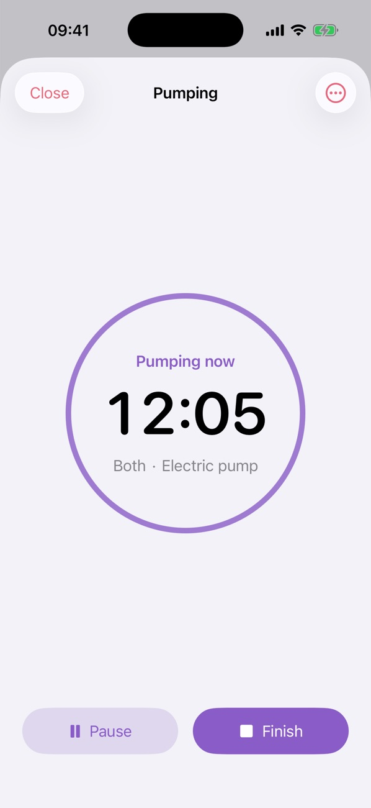
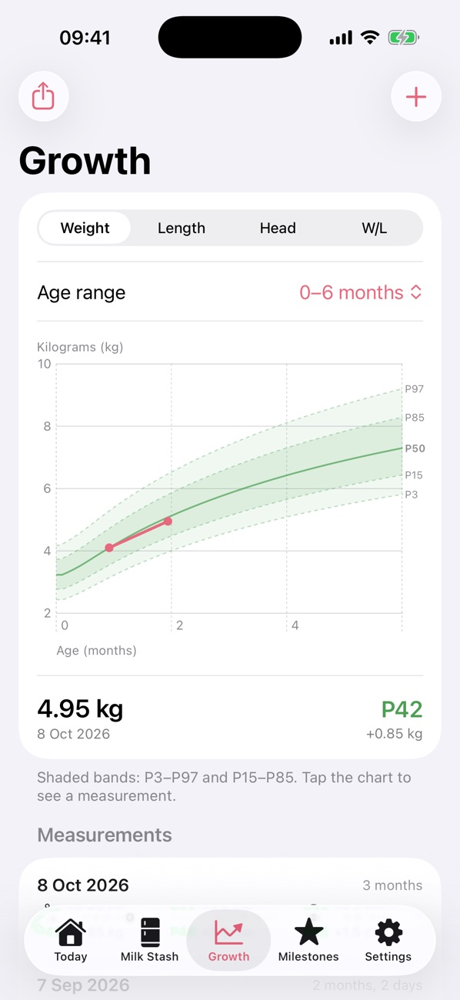
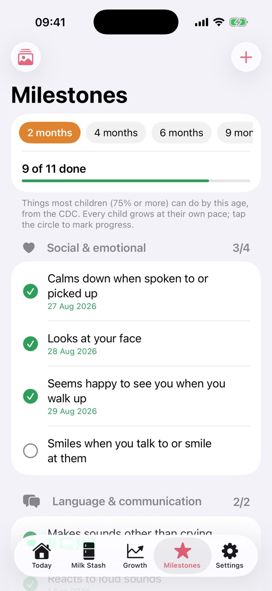

Every drop of milk, always in order.
Track bottle feeds and pumping, know which milk bag to use first, and follow your baby's growth. Share it all with your family, in real time.
Free to use. Premium is a one-time purchase. For iPhone, in English and Vietnamese.
Everything about your baby's milk, in one place
From the pump, to the fridge or freezer, to the bottle. No sign-up needed. Just open the app and start.
Never throw away good milk again
Every bag gets a number, an amount and a place. Baby Diary works out when each bag expires, based on CDC guidelines.
- See which bag to use first and which one to thaw next
- Get a reminder before a bag expires
- Fridge, freezer, cooler bag and thawed milk all have their own rules
- Print QR labels and scan a bag to open it
A pumping timer that stays with you
Start the timer and put your phone down. You can see it on the Lock Screen and in the Dynamic Island.
- Log the amount from each side
- Split the milk into bags and store them in one step
- Pumping reminders, with quiet hours at night
- See your best pumping hours (Premium)

Log a feed in a few taps
Choose the amount and the milk, and you're done. Breast milk is taken from your stash for you.
- See today at a glance: total, number of feeds, time since the last one
- Daily charts and a reminder for the next feed
- Widgets for your Home Screen and Lock Screen
- Log with Siri, Shortcuts, Spotlight or the Action button
Growth charts you can trust
Add your baby's weight, length and head size and see them on the official WHO growth charts.
- Percentiles worked out from WHO data
- Corrected age for babies born early
- Gentle notes when something is worth asking your doctor about
- A PDF report to bring to check-ups (Premium)

Celebrate every first
A simple checklist for each age, based on the CDC's 2022 milestones and the WHO motor milestones.
- Tick off what your baby can do
- Save "firsts" with a date and a photo
- Make a pretty card to share with family

Everyone who cares for your baby, on the same page
Whoever gives the bottle, everyone sees it right away.
Invite with a code
Add your partner, grandparents or a nanny with a short code or a QR code.
Choose who can do what
Parents can change everything. Caregivers can log feeds. Others can just look.
Syncs, even offline
Log without internet. Everything syncs as soon as you are back online.
Your baby's data is yours
We only keep what the app needs to work, and we never sell it.
No ads, no tracking
No ads, no tracking across other apps, and no analytics tools.
Photos stay on your phone
Milestone photos are never uploaded. They stay on your device.
Delete any time
Delete your account in Settings and your data goes with it.
Questions?
Here are the answers people ask for most.
Do I need an account?
No. The app works as soon as you open it. If you want to keep your data when you change phones, link your account in Settings → Account → Continue with Apple or Google.
How do I move to a new phone?
On your old phone, go to Settings → Account and continue with Apple or Google. On the new phone, open the app, go to the same place and sign in the same way. Your family's data comes back.
How do I restore Premium?
Open Settings → Baby Diary Premium → Restore purchase. Use the same Apple ID you bought it with.
How do I invite my family?
Go to Settings → Family → Invite someone. Choose what they can do and share the code or QR code. On their phone, they tap "I have an invite code" when the app first opens, or Settings → Family → Join a family.
How long does breast milk keep?
The app follows CDC guidelines: up to 4 hours at room temperature, 4 days in the fridge, 6 months in the freezer part of a fridge, and 12 months in a deep freezer (best within 6). Thawed milk keeps for 24 hours in the fridge and must never be frozen again. If your room is hot, you can make the room-temperature time shorter in Settings.
How do I delete my data?
Go to Settings → Account → Delete account. If you are the only family member, all of the family's data is deleted for good.
Still need help? Contact us on our support page.
Please include the app version from Settings → Version.